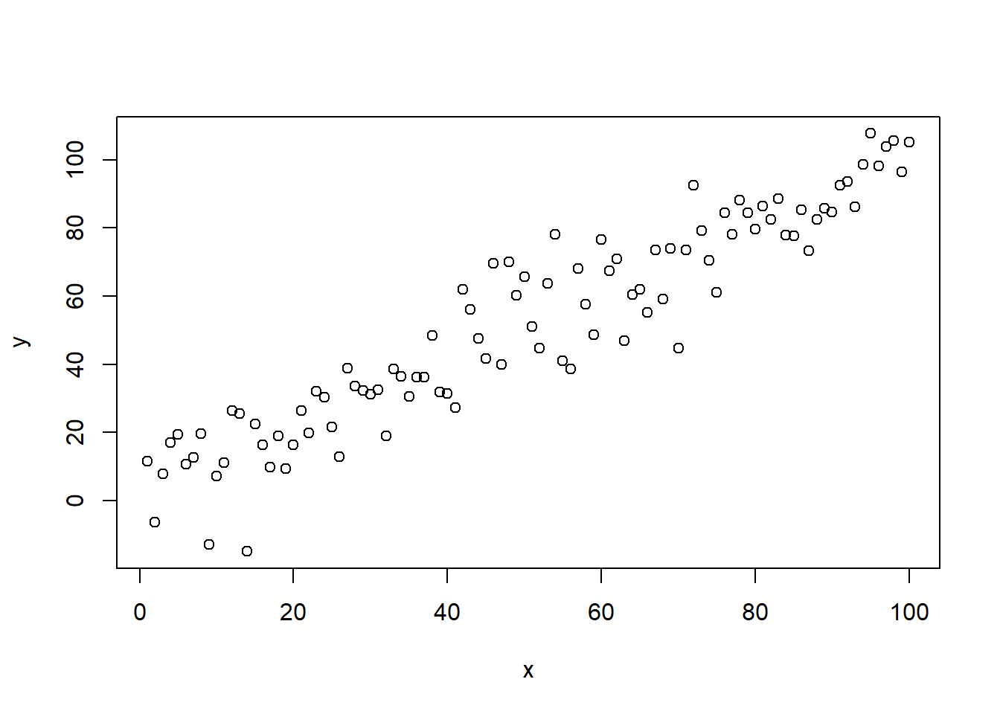

library(brms)## Loading required package: Rcpp## Loading required package: ggplot2## Loading 'brms' package (version 2.6.0). Useful instructions
## can be found by typing help('brms'). A more detailed introduction
## to the package is available through vignette('brms_overview').
## Run theme_set(theme_default()) to use the default bayesplot theme.x <- seq(1:100)
y <- x + rnorm(100,0,10)
d <- data.frame(x=x, y=y)
plot(x,y)
fit <- brm(y ~ x,
data = d,
cores = 3, chains = 3)## Compiling the C++ model## Start samplingsummary(fit)## Family: gaussian
## Links: mu = identity; sigma = identity
## Formula: y ~ x
## Data: d (Number of observations: 100)
## Samples: 3 chains, each with iter = 2000; warmup = 1000; thin = 1;
## total post-warmup samples = 3000
##
## Population-Level Effects:
## Estimate Est.Error l-95% CI u-95% CI Eff.Sample Rhat
## Intercept 0.74 1.71 -2.71 4.07 2980 1.00
## x 0.96 0.03 0.90 1.02 3004 1.00
##
## Family Specific Parameters:
## Estimate Est.Error l-95% CI u-95% CI Eff.Sample Rhat
## sigma 8.61 0.60 7.53 9.94 2805 1.00
##
## Samples were drawn using sampling(NUTS). For each parameter, Eff.Sample
## is a crude measure of effective sample size, and Rhat is the potential
## scale reduction factor on split chains (at convergence, Rhat = 1).